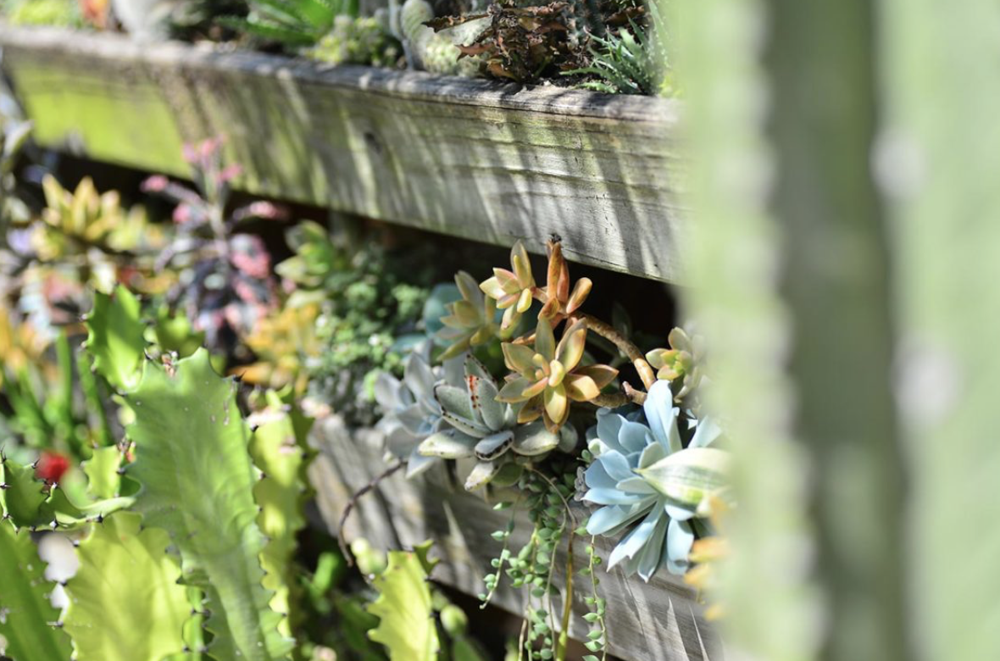
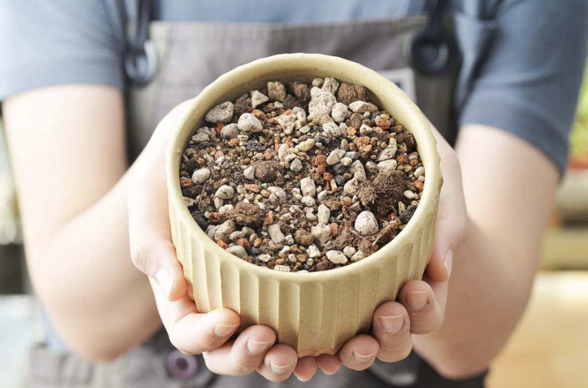
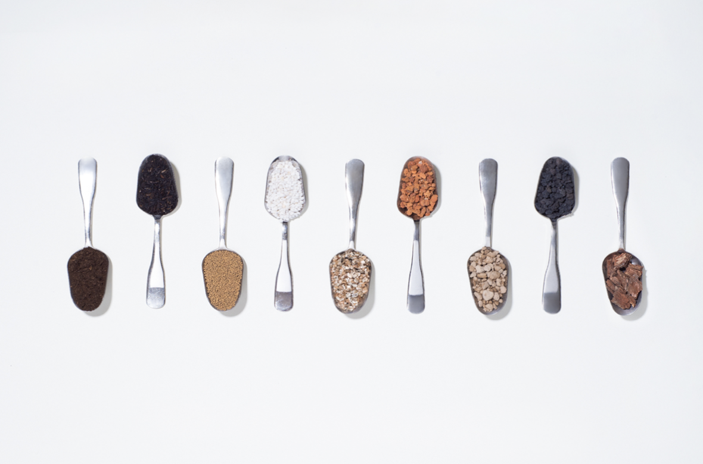
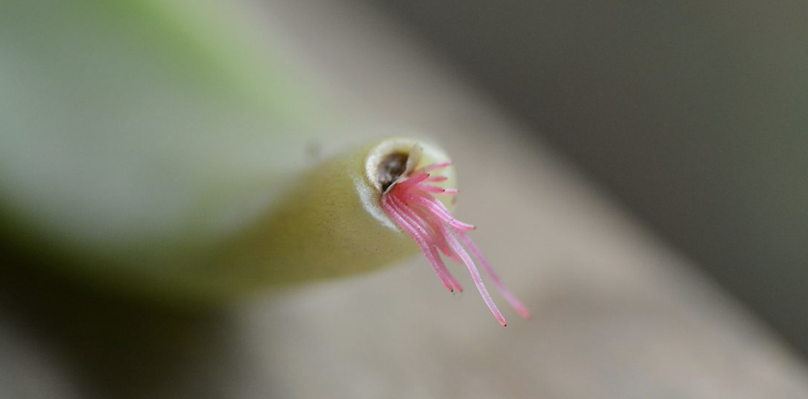
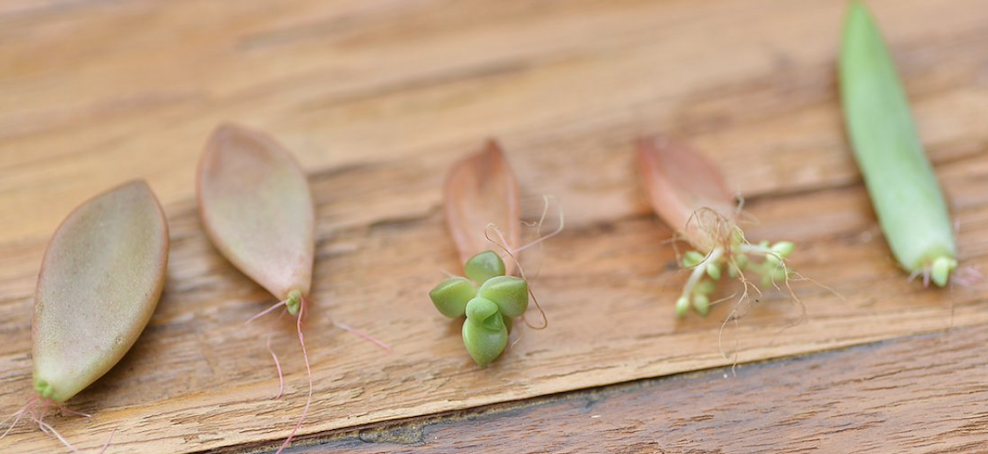
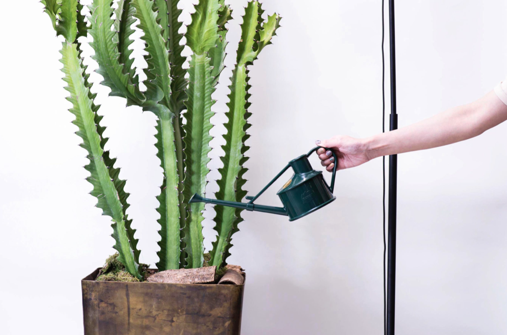
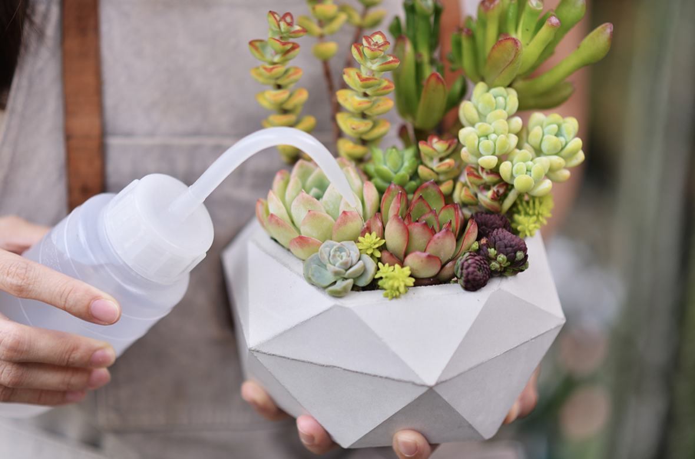

【完整教學】植物照顧終極指南 向黑手指說掰掰
什麼是植物？植物就是有細胞壁、行光合作用的多細胞生物，目前認為植物約有 50 萬種。人類從舊石器時代，開始定居並開啟原始農業開始研究植物，
關於植物的第一份實體文字記錄大約是一萬年前，當植物從 35 億年前就殖民了海洋，最早的人類不過兩百萬年前才出現呢！植物是多麽神秘而神奇的生命，讓我們都沈醉在他們的魅力中。

植物照顧的心法呢，第一件是「了解自家種植環境的狀態」、第二件事是「了解植物喜歡的環境」；進階的兩件事，「了解自己願意為了植物改變環境與生活方式到什麼程度」、「了解植物對環境的接受彈性程度」。也可以說因地制宜，了解自己的環境並給予最合適的照顧方式。
上述這些因素與心法綜合起來，就像是一張「植物照顧矩陣」，所有因素都交織在一起，隨著文章慢慢的學習，你的能力就逐漸填滿矩陣的空白，就能大幅度降低在植物照顧上失敗的機率。


根部也能獲得所需的氧氣，澆水後，待盆內的水順暢排出，進行空氣交換的工作，確認土壤乾燥後，即可進行下一次的澆水工作。 盆器挑選上則可以參考三個原則，若今天栽培的是不需要土壤來吸取養分的空氣鳳梨，那麼其實也會有很不一樣的考量喔！
- 有洞的盆器 - 提升土壤介質的排水能力，讓根系呼吸。
- 能排水的材質 - 水泥盆、陶盆、瓦盆等材質都能有效協助盆中的土壤排出水分。
- 美觀考量 - 挑選符合室內裝潢風格、色系的盆器。


- 澆水頻率 - 喜歡澆水嗎？只想一週澆一次水嗎？不同的想法會導出不一樣的環境建構。
- 老葉管理 - 能接受老葉黃化自然凋零嗎？還是不能接受一絲絲黃葉呢？這會是不一樣與植物互動的頻率。
- 出差旅遊 - 旅遊或出國的頻率高嗎？能找到人幫忙照顧植物嗎？大致上的策略會是評估植株的耐旱程度，如果不太耐乾旱就需要墊水盤，如果像多肉植物那樣耐乾，其實影響就不大。


- 植物缺光徒長 - 葉片間隔距離拉長、新生葉子變小。
- 植物爛根 - 底下的莖爛掉了嗎？可能是太潮溼了喔！根系無法呼吸就會變成這樣，要注意澆水量與土壤的成分喔。
- 病蟲害 - 有小白蟲在爬？可能是介殼蟲，趕緊用棉花棒或小鑷子把他們去除，如果還是有很多就要更換土壤了。
- 曬傷 - 你是不是從低光照的地方一次把他放去全日照的地方？葉片上出現黃褐色的部位是曬傷了無法恢復了喔。
- 植物進入休眠期 - 休眠期的植物處在生長停滯的狀況下，他其實也不需要太多水分，而你在此時澆了過多的水分，多肉認為自己不需要這麼多水，葉子就有可能會發生果凍化，其他植物就很可能會爛根給你看。